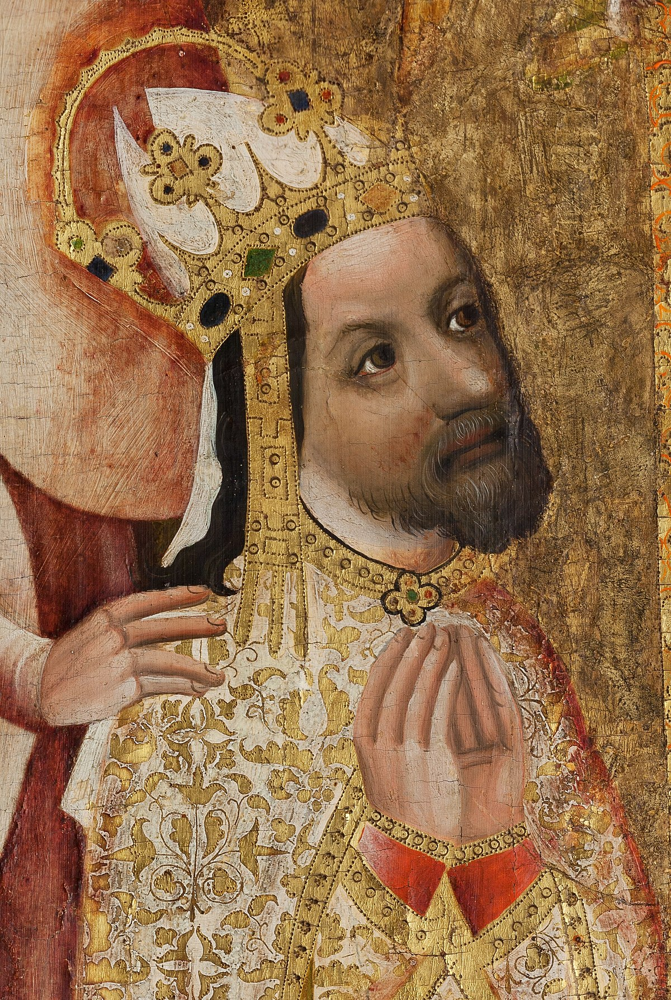

Tabulka HTML
Karel IV.
| Portrét | Základní informace | Vyznamné činy | |
|---|---|---|---|
|  | Jméno a přijmeni: Václav Karel IV. Lucemburský | Karlova univerzita, Nové Město pražské, Karlův most, Karlštejna a mnohé další hrady i mimo Země koruny České, katedrála svatého Víta, kostel Panny Mari sněžné atd. | |
| Narození: 14. května 1316 | Úmrtí: 29. listopadu 1378 | ||
| Stručná charakteristika: Karel IV., narozen jako Václav, vládnul od srpna 1346 až do své smrti v listopadu 1378. Byl to římsko-německý král a císař římský. Byl také italský král, burgundský král, moravský markrabě a lucemburský hrabě. Byl to první český král, který se stal také císařem Svaté říše římské a byl posledním korunovaným burgundským králem. Stal se tak osobním vládcem všech království Svaté říše římské. Byl syn dědičky Přemyslovců Elišky a českého krále Jana Lucemburského. Byl pokřtěn jako Václav, jméno Karel přijal při biřmování během své výchovy ve Francii po svém strýci a kmotrovi Karlu IV. Sličném. | |||
| Popisek portrétu: Podobizna Karla IV. na Votivním obrazu Jana Očka z Vlašimi | |||
| Odkaz na wikipedii: https://cs.wikipedia.org/wiki/Karel_IV. | |||
© Samuel Vaňuš, IT1, 20.4. 2021